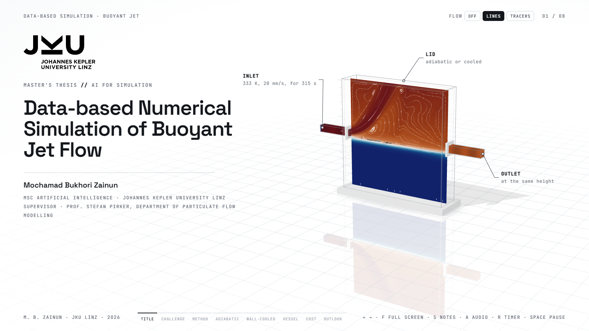
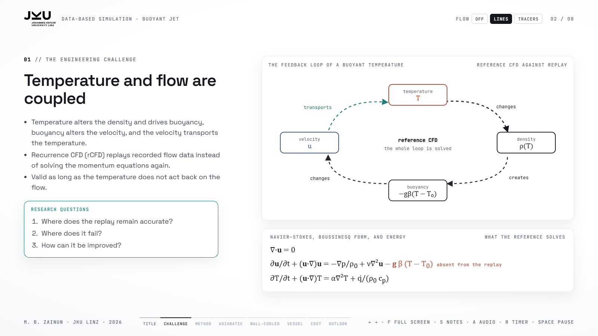
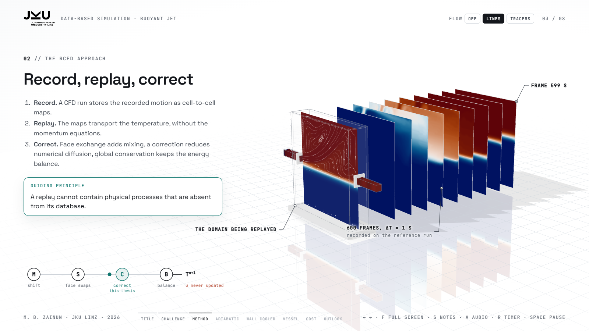
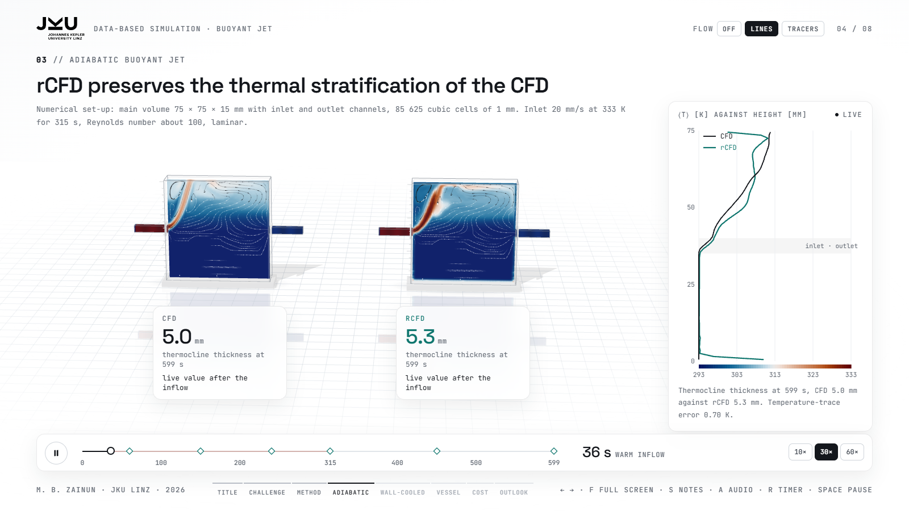
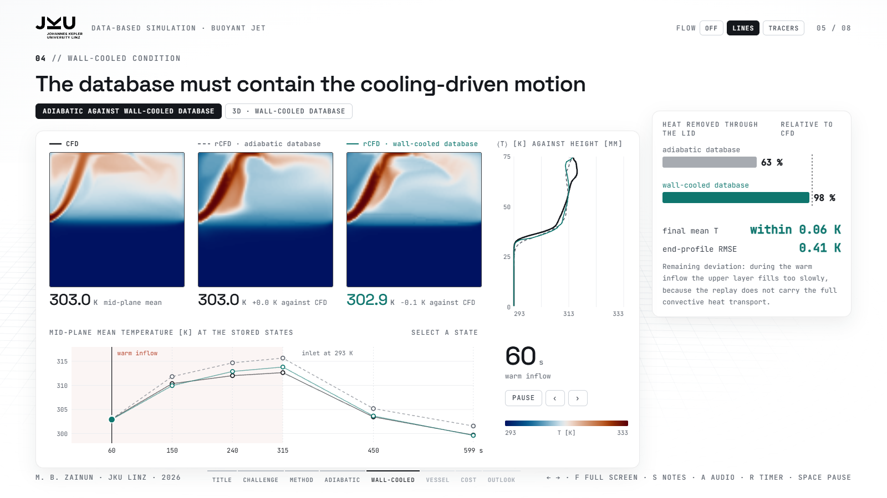
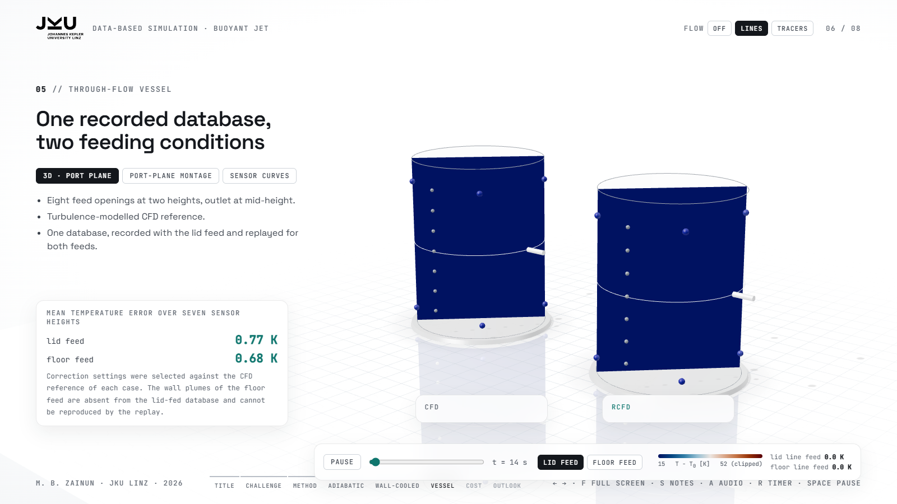
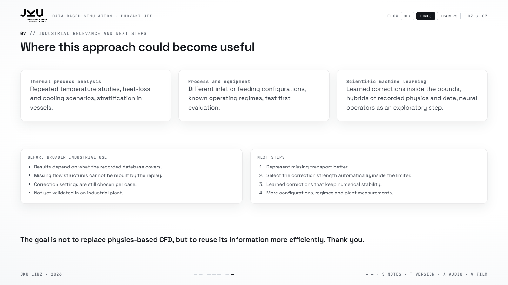
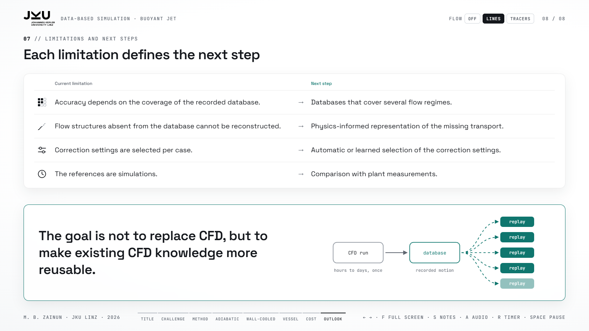

Short talk: Data-based Numerical Simulation of Buoyant Jet Flow
open the deck · PDF guide · 785 words
Whole talk
Slide 1 · Data-based Numerical Simulation of Buoyant Jet Flow0:30

Thank you for the opportunity to present my work.
I would like to present the work I did with my supervisor, Professor Stefan Pirker: Data-based Numerical Simulation of Buoyant Jet Flow.
The main idea is simple. We record a flow once and then reuse its recorded motion to simulate the temperature transport.
But there is one problem. Temperature can change the density of the fluid, and this can also change the flow itself.
- Thanks
- With supervisor Prof. Pirker, thesis title
- Idea: record once, reuse the motion
- Problem: temperature changes the flow
Slide 2 · The engineering challenge1:00

In conventional CFD, temperature and velocity affect each other.
First, temperature changes the density. This creates buoyancy forces, which change the fluid velocity. Then, the new velocity transports the temperature again.
This feedback loop is the buoyancy term in the momentum equation, and it makes the simulation more expensive.
To make the simulation faster, we can use Recurrence CFD, or rCFD. Instead of solving the complete flow again and again, rCFD reuses the recorded flow to transport the temperature.
This works well when temperature does not affect the flow, when it is a passive scalar. However, when temperature changes the flow, the recorded motion may no longer represent the real physical behaviour.
Therefore, my work investigates three main questions. Where does rCFD work well? Where does it fail? And how can we improve it?
- T → density → buoyancy → velocity → T
- Buoyancy term: the loop, more expensive
- rCFD reuses the recorded flow
- Fine for a passive scalar, not when T changes the flow
- Three questions: works, fails, improve
Slide 3 · The rCFD method0:50

Let me briefly explain the method.
First, we run a normal CFD simulation and record how the fluid moves between cells. This motion is stored in cell-to-cell maps.
During the replay, these maps transport the temperature without solving the momentum equations again.
However, the recorded maps do not capture all the mixing. Therefore, the method adds face exchange between neighbouring cells. Then, global conservation corrects the total energy balance.
In my work, I add one more correction step between face exchange and global conservation. This step reduces numerical diffusion and keeps the temperature within local limits.
- CFD run → cell-to-cell maps
- Replay without momentum equations
- Face exchange, then global conservation
- My step: correction, less numerical diffusion, local limits
Slide 4 · Numerical set-up and the adiabatic case1:00

I started with a small numerical set-up, shown on the slide. The flow is laminar, so we can study the replay errors without turbulence as another problem.
I tested two boundary conditions. The first is the adiabatic case. A warm jet enters the cold fluid and creates a temperature layer.
On the left you see the CFD, on the right rCFD. In the CFD, the thermocline is 5 millimetres thick at the end of the run. rCFD gives 5.3 millimetres, and the temperature-trace error is 0.70 kelvin.
So in this condition, rCFD keeps the thermal stratification of the CFD.
- Set-up on the slide: small, laminar, Re ≈ 100
- Two boundary conditions, first adiabatic
- CFD left, rCFD right: 5.0 against 5.3 mm, 0.70 K
- rCFD keeps the stratification
Slide 5 · Wall-cooled case1:10

The second boundary condition is the wall-cooled case. The top wall removes heat. The fluid becomes colder and denser, so it sinks and creates additional motion.
First, I reused the adiabatic database. It removed only about 63 percent of the heat that the CFD removes through the lid. In the montage you can see why: a cold film stays under the lid, and the bulk below stays too warm. The recorded flow never contained the sinking motion, and the correction could not create it.
So I recorded a new database under cooling. Now rCFD removes about 98 percent of the heat. The final mean temperature is within about 0.06 kelvin of the CFD, and the end-profile RMSE is 0.41 kelvin.
One error remains, as noted on the slide: during the warm inflow, the upper layer fills too slowly.
- Cooled lid: fluid sinks, extra motion
- Adiabatic database: 63 %, cold film
- Database recorded under cooling: 98 %, 0.06 K, 0.41 K
- Remaining: slow filling
Slide 6 · Laboratory vessel0:50

Finally, I tested the method in a laboratory vessel with through-flow.
I recorded one database with the lid feed, and used it for both the lid feed and the floor feed. Across seven sensor heights, the mean temperature error is 0.77 kelvin for the lid feed and 0.68 kelvin for the floor feed.
Two points are important. The correction settings were selected with the CFD of each case, so this is not a blind prediction. And the floor feed creates wall plumes that are not in the lid-fed database, so rCFD cannot create them.
- Lab vessel, one lid-fed database for both feeds
- 0.77 K and 0.68 K
- Settings chosen with the CFD, not blind
- Wall plumes missing from the database
Slide 7 · Computational performance0:35

Once the database exists, rCFD is much faster.
For the adiabatic condition, the CFD took about 569 minutes, and the replay about 1.9 minutes. That is around 300 times faster. For the vessel, the CFD took several days, and the replay less than 9 minutes.
These numbers exclude the cost of generating the database. So rCFD does not remove the need for CFD. It reuses an existing simulation when the database fits the task.
- 569 → 1.9 min, ≈ 300 ×
- Vessel: days → under 9 min
- Database cost excluded, CFD still needed
Slide 8 · Limitations and next steps0:45

To summarise. In the adiabatic jet, rCFD keeps the thermocline of the CFD. Under cooling, the database must contain the cooling-driven motion. And in the vessel, one database serves both feeds.
The limits are clear. The results depend on the database, missing flow structures cannot be reconstructed, and the correction settings are still case-dependent.
My next steps would be better database coverage, physics-informed or learning-based corrections, automatic correction settings, and a comparison with plant measurements. Thank you.
- Three findings
- Three limits
- Next steps: coverage, physics-informed, automatic settings, plant measurements
- Thank you